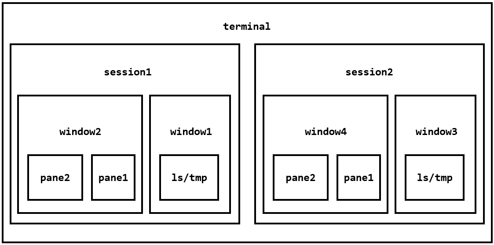
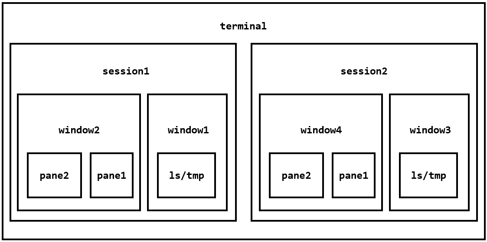

What is tmux?
A typical use of the command line is to open a terminal window (session), whose important feature is that window is connected to the process started in it (window closed, session ends, vice versa).
Tmux, Terminal multiplexer, is the session and window “unbind” tool. It allows:
- simultaneous access to multiple sessions in a single window. (useful for running multiple terminal simultaneously)
- a new window to access an existing session;
- each session having multiple connection window (multiple people sharing sessions in real time)
- arbitrary vertical and horizontal splitting of windows;
Basic conception:
- session:
 

Basic Usage
Start —
tmux, Quit—exit/Ctrl-d, Prefix Key—Ctrl+b;A status bar is located at the bottom:
1
2[name/id] [list of ]
[0] 0:bash 1:test3* 2:test4- "VM-16-17-ubuntu" 15:28 04-Oct-23
Session Management
New a session:
tmux new -s <session-name>;1
tmux new -s sessionName -n window
Split sessions:
tmux detach/Ctrl+b d, after the command is executed, the current Tmux window exits, but the session and the processes inside it still run in the background;View all current tmux sessions:
tmux ls1
2
30: 1 windows (created Tue Sep 19 20:42:24 2023)
1: 1 windows (created Tue Oct 3 19:57:48 2023)
test2: 1 windows (created Wed Oct 4 14:49:04 2023) (attached)Attach a session:
tmux attach -t id/<session-name>;Kill a session:
tmux kill-session -t id/<session-name>;Switch a session:
tmux switch -t id/<session-name>;Rename a session:
tmux rename-session -t id/<session-name> <new-name>;Shortcuts:
Ctrl+bd: Split current session;Ctrl+b slist all session;Ctrl+b wlist all windows;Ctrl+b $: rename current session;
Simple workflow of tmux:
- new a session:
tmux new -s my_session; - run program in tmux window;
Ctrl+b dsplits the session;- Attach the last session
tmux attach-session -t my_session;
- new a session:
Pane Operation
Tmux can split the window into panes, which can execute different commands.
tmux splilt-windowsplits into vertical layout;tmux split-window -hsplits into horizontal layout;tmux select-panemoves the cursor in different panes:1
2
3
4
5
6
7
8
9
10
11光标切换到上方窗格
tmux select-pane -U
光标切换到下方窗格
tmux select-pane -D
光标切换到左边窗格
tmux select-pane -L
光标切换到右边窗格
tmux select-pane -Rtmux swap-paneexchanges the positions of panes:1
2
3
4
5当前窗格上移
tmux swap-pane -U
当前窗格下移
tmux swap-pane -DShortcuts in pane operations:
1
2
3
4
5
6
7
8
9
10
11
12
13
14Ctrl+b % ：划分左右两个窗格。
Ctrl+b " ：划分上下两个窗格。
Ctrl+b <arrow key> ：光标切换到其他窗格。<arrow key>是指向要切换到的窗格的方向键，比如切换到下方窗格，就按方向键↓。
Ctrl+b ; ：光标切换到上一个窗格。
Ctrl+b o ：光标切换到下一个窗格。
Ctrl+b { ：当前窗格与上一个窗格交换位置。
Ctrl+b } ：当前窗格与下一个窗格交换位置。
Ctrl+b Ctrl+o ：所有窗格向前移动一个位置，第一个窗格变成最后一个窗格。
Ctrl+b Alt+o ：所有窗格向后移动一个位置，最后一个窗格变成第一个窗格。
Ctrl+b x ：关闭当前窗格。
Ctrl+b ! ：将当前窗格拆分为一个独立窗口。
Ctrl+b z ：当前窗格全屏显示，再使用一次会变回原来大小。
Ctrl+b Ctrl+<arrow key> ：按箭头方向调整窗格大小。
Ctrl+b q ：显示窗格编号。Close window/pane
1
exit
Window Operation
tmux new-window -n <window-name>: new a window;tmux select-window -t <window-number/name>: switch windowtmux rename-windowShortcuts in window operation:
1
2
3
4
5
6Ctrl+b c：创建一个新窗口，状态栏会显示多个窗口的信息。
Ctrl+b p：切换到上一个窗口（按照状态栏上的顺序）。
Ctrl+b n：切换到下一个窗口。
Ctrl+b <number>：切换到指定编号的窗口，其中的<number>是状态栏上的窗口编号。
Ctrl+b w：从列表中选择窗口。
Ctrl+b ,：窗口重命名。
Other Commands
1 | 列出所有快捷键，及其对应的 Tmux 命令 |